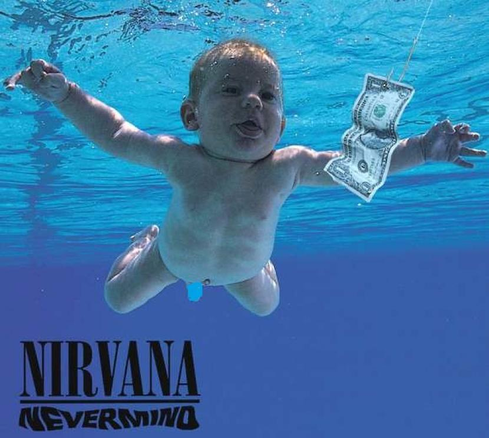

| Nirvana mulai digemari, dan dikenal oleh dunia sejak
dirilisnya album mereka yang berjudul Nevermind,
dengan single yang dijagokan yaitu Smells Like Teen Spirit,
single ini membuat mereka mendapatkan trofi The Best
Alternative/Rock Band dan sempat menduduki tangga nada
pertama di Billboard Amerika. Nirvana terdiri dari Krist
Novoselic, Kurt Cobain, dan Dave Grohl. Band ini bubar setelah
Kurt Cobain tewas akibat overdosis sesudah menghisap kokain
di tempat tinggalnya pada tahun 1994.
|
|
|
 |
|
Bleach adalah album studio debut olehband rock Amerika Nirvana ,
dirilis pada 15 Juni 1989, oleh Sub Pop . Setelah merilis single debut mereka
" Love Buzz " di Sub Pop pada November 1988, Nirvana berlatih selama dua sampai
tiga minggu sebagai persiapan untuk merekam album penuh. Sesi rekaman utama untuk
Bleach berlangsung di Reciprocal Recording di Seattle, Washington antara Desember 1988 dan Januari 1989.
Ini adalah satu-satunya album Nirvana yang dirilis di label Sub Pop dan satu-satunya album mereka yang
menampilkan drummer Chad Channing . |
| Nevermind adalah album studio kedua olehband rock Amerika Nirvana , dirilis pada 24 September 1991, oleh DGC Records.
Itu adalah rilis pertama Nirvana di label besar dan yang pertama menampilkan drummer Dave Grohl . Diproduksi oleh Butch Vig,
Nevermind menampilkan suara yang lebih halus dan ramah radio daripada karya band sebelumnya.
Itu direkam di Sound City Studios di Van Nuys , California, dan Smart Studios di Madison,
Wisconsin pada bulan Mei dan Juni 1991, dan dikuasaiAgustus itu di Mastering Lab di Hollywood , California |
|
 |